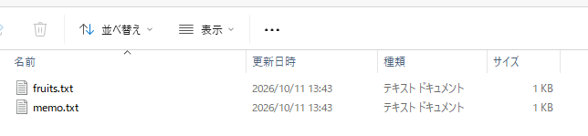

パソコンの仕組み
- ファイルとフォルダの階層構造と「パス」を読める
- CPU・メモリ・ストレージの役割の違いが分かる
- OS とアプリの関係、クラウドとは何かが分かる
普段エクスプローラーを使っていれば、すでにファイルとフォルダの操作はできています。この章では、その裏側で何が起きているかを整理します。次の第2章で使うターミナルを理解するための土台になります。
1-1. ファイルとフォルダは「木」の形をしている
パソコンの中のファイルは、フォルダの中にフォルダがある、という入れ子の構造で整理されています。この構造を図にすると、木を逆さにした形になります。
1-2. パス：ファイルの住所
ファイルやフォルダの場所を文字で表したものをパスといいます。住所と同じで、一番大きな単位から順にたどります。
C:\Users\taro\Documents\memo.txt| 部分 | 意味 |
|---|---|
C: | Cドライブ（一番上） |
Users | Cドライブの中の Users フォルダ |
taro | その中の taro さんのフォルダ |
Documents | その中の Documents フォルダ |
memo.txt | 最後がファイル。.txt が拡張子 |

拡張子とは
ファイル名の最後の .txt や .docx が拡張子です。「このファイルは何の種類か」をパソコンに伝える目印です。初期設定では非表示のことがあります。エクスプローラーの「表示」メニューから「ファイル名拡張子」にチェックを入れて、表示しておきましょう。

1-3. パソコンの部品：机と引き出しで考える
| 部品 | 役割 | 例え |
|---|---|---|
| CPU | 計算や処理をする | 作業する人 |
| メモリ | 作業中のデータを一時的に置く。電源を切ると消える | 作業机の上 |
| ストレージ（SSD など） | データを保存しておく。電源を切っても残る | 引き出し・棚 |
ファイルを開くと、引き出し（ストレージ）から机の上（メモリ）に取り出され、作業する人（CPU）が処理します。「保存」とは、机の上の内容を引き出しにしまうことです。保存しないまま電源が切れると、机の上の内容は消えてしまいます。
1-4. OS とアプリ
OS（オペレーティングシステム）は、パソコン全体の管理役です。この教材では Windows 11 のことです。画面の表示、ファイルの管理、キーボードやマウスの受付などを担当します。
アプリ（Word、ブラウザ、VS Code など）は、OS にお願いしてファイルを読み書きしたり、画面に表示したりして動きます。エクスプローラーも、ファイルを見せてくれるアプリの一つです。
1-5. プログラムとソースコード
アプリの正体はプログラムです。プログラムは、人間が書いた「ソースコード」から作られます。そして、ソースコードは、ただのテキストファイルです。メモ帳で開ける文字の並びで、特別なものではありません。
Git が記録するのは、主にこのソースコードのようなテキストファイルの変更履歴です。「文字ファイルの変更を記録する道具」と覚えておいてください。
1-6. クラウドとは
「クラウド」という言葉は雲のようで、つかみにくいかもしれません。実際は、インターネットの向こうにある、誰かの大きなパソコン（サーバー）のことです。
GitHub も、その一つです。自分のパソコンにあるファイルの記録を、GitHub のサーバーに置くことで、離れた場所にいる4人が同じ記録を見られるようになります。
確認クイズ
Q1. C:\Users\hanako\Desktop\plan.md で、ファイルはどれですか？
最後の plan.md。それより前の Users、hanako、Desktop はフォルダ。
Q2. 作業中のファイルを「保存」しないまま電源が切れると、内容が消えるのはなぜですか？
作業中の内容はメモリ（机の上）にあり、メモリは電源を切ると消えるため。保存すると、ストレージ（引き出し）に書き込まれる。
Q3. GitHub にあるものはどこに保存されていますか？
インターネットの向こうにある、GitHub のサーバー。
話し合おう（月1回の集まり用）
- 普段のファイルの整理方法を教え合ってみましょう。デスクトップに置く派ですか？ フォルダに分ける派ですか？
- 「保存し忘れて内容が消えた」経験はありますか？